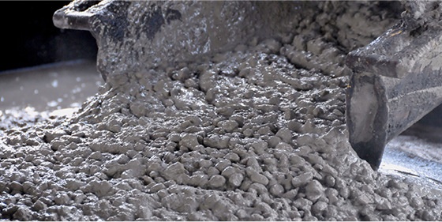
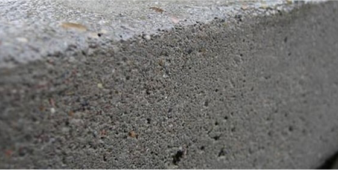

<section class="goodKnow">
    <div class="container">

        <h3 class="goodKhow_title">ПОЛЕЗНО ЗНАТЬ</h3>
        <div class="goodKhow_line"></div>

        <div class="row">
            <div class="goodKnow_box">

                <div class="goodKnow_block col-xl-6">
                    <div class="goodKnow_sector">
                        <div class="goodKnow_block-img">
                            
                        </div>
                        <div class="goodKnow_block-title">
                            <h4 class="goodKnow_block-lable">ЧТО ТАКОЕ БЕТОН</h4>
                            <div class="goodKhow_block-line"></div>
                            <div class="goodKnow_block-text">
                                Бетон используют в строительстве жилых домов и<br> производственных помещений.
                                Для возведения<br> фундаментов, стен, дорожек, мостов необходимо<br> применять
                                отдельный состав, различающийся по<br> классу или марке. Эта информация размещается<br>
                                на упаковке
                            </div>
                            <div class="goodKnow_text-date">
                                30.04.19
                                <div class="goodKnow_text-arrow">
                                    
                                </div>
                            </div>
                        </div>
                    </div>
                </div>

                <div class="goodKnow_block-2 col-xl-6 col-md-6 ">
                    <div class="goodKnow_sector-2">
                        <div class="goodKnow_block-img">
                            
                        </div>
                        <div class="goodKnow_block-title">
                            <h4 class="goodKnow_block-lable">СВОЙСТВА БЕТОНА</h4>
                            <div class="goodKhow_block-line"></div>
                            <div class="goodKnow_block-text">
                                Одним из самых популярных материалов, которые<br> используются в
                                ере строительства, является<br> бетон. Он необходим фактически на
                                каждом объекте. Именно благодаря своей универсальности и
                                востребованности цены на бетон могут быть не самыми низкими.
                            </div>
                            <div class="goodKnow_text-date">
                                30.04.19
                                <div class="goodKnow_text-arrow">
                                    <a href="#" class="goodKnow_text-link" >
                                        
                                    </a>
                                </div>
                            </div>
                        </div>
                    </div>
                </div>

            </div>

        </div>
        <div class="goodKnow_articles">
            <a href="#" class="goodKnow_articles-all">ВСЕ СТАТЬИ
                
            </a>
        </div>
    </div>
</section>